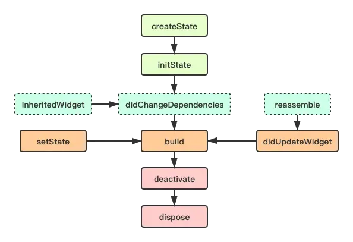

Widget生命周期
Widget的功能是“描述一个UI元素的配置数据”
StatelessWidget
StatelessWidget 用于不需要维护状态的场景，并且只会被渲染一次，它通常在 build 方法中通过嵌套其它 Widget 来构建UI，在构建过程中会递归的构建其嵌套的 Widget。
StatefulWidget

StatefulWidget 生命周期的整个过程可以分为四个阶段
- 初始化阶段：createState 和 initState
- 组件创建阶段：didChangeDependencies 和 build
- 触发组件 build：didChangeDependencies、setState 或者didUpdateWidget 都会引发的组件重新 build
- 组件销毁阶段：deactivate 和 dispose
createState ，该函数为 StatefulWidget 中创建 State 的方法，当 StatefulWidget 被调用时会立即执行 createState 。
initState ，该函数为 State 初始化调用，因此可以在此期间执行 State 各变量的初始赋值，同时也可以在此期间与服务端交互，获取服务端数据后调用 setState 来设置 State。
didChangeDependencies ，当State对象的依赖发生变化时会被调用；例如：在之前build() 中包含了一个InheritedWidget，然后在之后的build() 中InheritedWidget发生了变化，那么此时InheritedWidget的子widget的didChangeDependencies()回调都会被调用。典型的场景是当系统语言Locale或应用主题改变时，Flutter framework会通知widget调用此回调。
build ，主要是返回需要渲染的 Widget ，由于 build 会被调用多次，因此在该函数中只能做返回 Widget 相关逻辑，避免因为执行多次导致状态异常。在 build 之后还有个回调 addPostFrameCallback，在当前帧绘制完成后会回调，注册之后不能被解注册并且只会回调一次；addPostFrameCallback是 SchedulerBinding 的方法；由于 mixin WidgetsBinding on SchedulerBinding，所以添加这个回调有两种方式：SchedulerBinding.instance.addPostFrameCallback((_) => {});或者WidgetsBinding.instance.addPostFrameCallback((_) => {});
reassemble， 在 debug 模式下，每次热重载都会调用该函数，因此在 debug 阶段可以在此期间增加一些 debug 代码，来检查代码问题。
didUpdateWidget ，在widget重新构建时，Flutter framework会调用Widget.canUpdate来检测Widget树中同一位置的新旧节点，然后决定是否需要更新，如果Widget.canUpdate返回true则会调用此回调。正如之前所述，Widget.canUpdate会在新旧widget的key和runtimeType同时相等时会返回true，也就是说在在新旧widget的key和runtimeType同时相等时didUpdateWidget()就会被调用。父组件发生 build 的情况下，子组件该方法才会被调用，其次该方法调用之后一定会再调用本组件中的 build 方法。
deactivate ，在组件被移除节点后会被调用，如果该组件被移除节点，然后未被插入到其他节点时，则会继续调用 dispose 永久移除。
dispose ，永久移除组件，并释放组件资源。